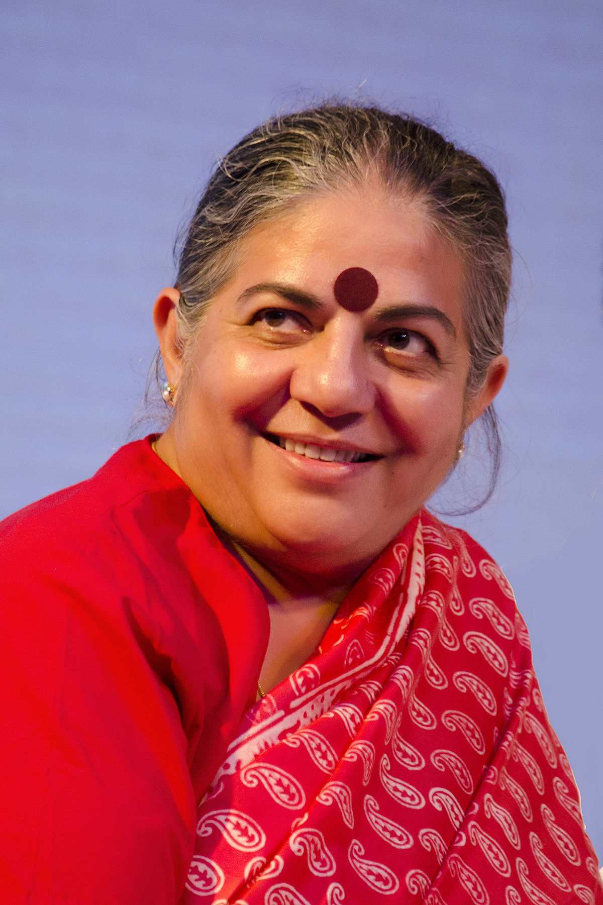

Jane Goodall
Primate Conservation Expert
World-renowned primatologist and anthropologist known for her groundbreaking work with chimpanzees
in Tanzania. Founder of the Jane Goodall Institute, which supports wildlife research, education, and
conservation. One of the most respected advocates for animal welfare and environmental conservation
globally.
United Kingdom
Amit Kumar Mittal
Clean Energy Advocate
A leading figure in promoting clean and sustainable energy solutions in India. Based in Bangalore,
he champions renewable energy initiatives and develops environmental policies focused on reducing
carbon emissions. His innovative approaches to energy transitions have inspired regional sustainable
development.
Bangalore, India

Vandana Shiva
Biodiversity Guardian
Indian environmental activist, author, and scholar known for her passionate advocacy for
biodiversity, seed sovereignty, and traditional farming practices. Founder of Navdanya, a movement
for organic farming and farmer rights. A leading voice in ecological feminism and food justice on
the global stage.
India
Sylvia Earle
Ocean Conservation Pioneer
Marine biologist and oceanographer nicknamed "Her Deepness." A pioneer in ocean exploration who has
spent thousands of hours underwater studying marine ecosystems. Founder of Mission Blue, a global
initiative to protect vital marine areas. A tireless advocate for ocean conservation and raising
awareness about threats to marine life.
United States

David Attenborough
Wildlife Documentarian
British broadcaster and natural historian who created iconic nature documentaries like Planet Earth
and Blue Planet. His distinctive voice and masterful storytelling have brought the wonders of the
natural world into millions of homes, inspiring global conservation awareness and action across
generations.
United Kingdom

Greta Thunberg
Climate Action Advocate
Swedish climate activist who started the Fridays for Future movement by striking from school to
protest climate inaction. Her direct approach and powerful speeches have mobilized millions of young
people worldwide. She has become a global symbol of youth climate activism and urgency in addressing
the climate crisis.
Sweden